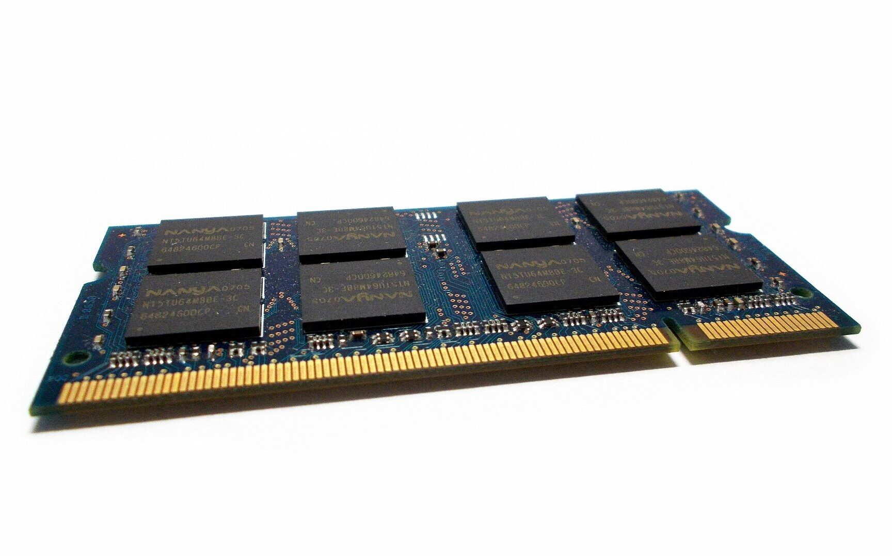
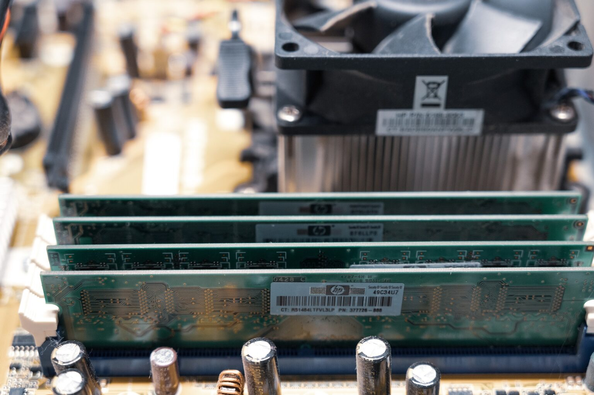

Memoria RAM a calculatorului: Ghid tehnic complet de funcționare și upgrade
Cum influențează capacitatea totală, frecvențele în MHz și latențele CAS viteza de lucru și cum evităm blocajele majore cauzate de memoria virtuală.
Memoria RAM (Random Access Memory) este o componentă obligatorie pentru orice echipament IT. Indiferent că vorbim despre un computer desktop, un laptop, un telefon mobil sau o tabletă, prezența unui modul de memorie cu acces aleatoriu este o condiție vitală pentru ca aparatul să poată porni și să ruleze cod software.
Este extrem de important să diferențiem memoria RAM de memoria de stocare (reprezentată de hard disk sau SSD). În timp ce stocarea păstrează fișierele permanent, chiar și atunci când calculatorul este oprit, memoria RAM acționează ca spațiul de lucru ultra-rapid unde sistemul de operare, aplicațiile și fișierele active sunt încărcate temporar în timpul unei sesiuni active de lucru.
Capacitatea totală a memoriei RAM și impactul în multitasking
Numărul și complexitatea programelor care pot rula simultan pe un computer depind în mod direct de capacitatea totală a memoriei RAM. Cu cât această valoare este mai mare, cu atât procesorul poate jongla cu mai multe procese în același timp. Dacă observi o degradare vizibilă a vitezei sau blocaje frecvente (înghețarea ecranului) atunci când ai deschise zeci de tab-uri sau aplicații, sistemul tău se confruntă cu o lipsă acută de spațiu în RAM.
Pentru activități profesionale care manipulează fișiere masive – cum sunt designul grafic, randarea 3D și editarea video – suplimentarea memoriei este obligatorie. Fără o cantitate adecvată de RAM, sistemul cade sub presiunea proceselor de fundal, existând riscul blocării totale și al pierderii datelor nesalvate.
Ce este memoria RAM Virtuală și de ce încetinește sistemul?
Când memoria RAM fizică devine complet ocupată, sistemul de operare folosește un mecanism de urgență: alocă o porțiune din hard disk sau SSD pentru a funcționa drept memorie virtuală (cunoscută ca Pagefile sau Swap). Deși acest artificiu împiedică închiderea bruscă a programelor, apare o mare problemă de performanță.
Chiar și cele mai rapide unități de stocare sunt considerabil mai lente decât modulele RAM fizice. În momentul în care procesorul este forțat să citească și să scrie date din memoria virtuală de pe stocare, viteza generală a calculatorului scade dramatic. De aceea, extinderea capacității fizice de RAM este singura soluție reală pentru a elimina timpii morți de răspuns.

Foto: Module compacte de memorie RAM în format SODIMM, folosite pentru upgrade-ul de capacitate și de viteză al laptopurilor în service.
Standardele plăcii de bază, limitările FSB și tipul de slot
Nu poți instala orice tip de memorie RAM pe orice computer. Tipul, generația și viteza maximă acceptată sunt impuse strict de arhitectura plăcii de bază. În trecut, un rol cheie îl juca magistrala FSB (Front Side Bus), care funcționa ca o punte directă de comunicare între CPU și RAM. Dacă instalezi memorii cu o frecvență nominală mai mare decât cea dictată de magistrala plăcii, modulele vor fi limitate automat la valoarea acesteia din urmă.
Fiecare generație tehnologică aduce viteze crescute, consum redus de energie și modificări fizice esențiale: poziția cheii de ghidaj (decupajul de pe linia de contact) diferă la fiecare standard, împiedicând introducerea accidentală a unui modul DDR3 într-un slot DDR4 sau DDR5.
Arhitectura sloturilor: Single Channel vs. Dual Channel
Single Channel: Placa de bază accesează modulele pe rând, pe o lățime de bandă de 64 de biți. În acest mod, ordinea instalării plăcuțelor în sloturi nu influențează arhitectura.
Dual Channel: Lățimea de bandă se dublează la 128 de biți, permițând accesarea simultană a două module. Pentru a activa acest mod, memoriile trebuie instalate în perechi identice (aceeași capacitate, frecvență și, ideal, același producător) în sloturile pereche indicate de producător (de regulă sloturile 2 și 4).
Triple & Quad Channel: Configurații avansate întâlnite pe platforme entuziast sau servere, unde combinarea greșită a modulelor poate anula instant lățimea extinsă de bandă, forțând sistemul să ruleze la cea mai mică viteză detectată.
🔧 În cadrul service-ului nostru din București (Sector 6, Strada Aleșd nr. 10), efectuăm diagnosticări hardware avansate utilizând utilitare riguroase (MemTest86). Identificăm modulele care generează ecrane albastre (BSOD), calculăm compatibilitățile de frecvență și montăm memorii noi DIMM (Desktop) și SODIMM (Laptop). Diagnoza hardware este complet gratuită.
Evoluția pinilor și ghidul cronologic al formatelor DIMM / SODIMM
Arhitectura modulelor a evoluat constant din 1949 (anul apariției primelor concepte geometrice de memorie cu acces aleatoriu). Astăzi, pe piață coexistă o varietate de configurații fizice în funcție de numărul de pini (contacte):
72-pin SO-DIMM: Folosit pentru memorii vechi de tip FPM DRAM și EDO DRAM.
144-pin SO-DIMM: Implementat pentru tehnologia SDR SDRAM în laptopuri vechi.
168-pin DIMM: Format standard pentru Desktop SDR SDRAM, prevăzut cu crestături laterale duble.
184-pin DIMM: Introdus odată cu prima generație de memorii DDR RAM în iunie 2000.
200-pin SO-DIMM: Standardul de laptop pentru tehnologiile DDR și DDR2.
204-pin SO-DIMM: Formatul compact specific memoriilor de laptop de tip DDR3.
240-pin DIMM: Utilizat pe desktop-uri pentru generațiile DDR2 și DDR3 (cu poziții diferite ale cheii).
260-pin SO-DIMM: Formatul standard curent pentru laptopuri cu memorii DDR4.
288-pin DIMM: Formatul standard pentru calculatoarele desktop cu module DDR4 și DDR5, având o grosime redusă a PCB-ului și o curbură a pinilor de contact pentru inserție lină.

Foto: Alinierea unui modul de memorie RAM cu fanta de ghidaj a slotului de pe placa de bază înainte de exercitarea presiunii de fixare.
Ghid de instalare în siguranță pentru PC și Laptop
Procedura pentru Desktop PC:
Se deconectează complet cablul de alimentare de la rețea și perifericele pentru a anula riscul descărcărilor electrostatice sau al scurtcircuitelor pe liniile de stand-by ale plăcii. Se deschide panoul lateral, se curăță praful acumulat în fante (particulele de praf căzute în slot pot izola pinii și bloca pornirea). Se deschid clamele laterale ale slotului, se aliniază decupajul memoriei cu cheia fizică a slotului și se apasă ferm pe ambele capete până când clemele se închid automat cu un declic pronunțat.
Procedura pentru Laptop (SODIMM):
Se oprește laptopul, se întoarce pe o suprafață moale și se decuplează bateria externă (sau cea internă după desfacerea capacului). Modulele de laptop se montează diferit: se introduc în slot la un unghi înclinat de aproximativ 30 de grade, împingând ușor până când contactele intră complet, apoi se apasă plăcuța în jos, spre placa de bază, până când cele două arcuri metalice laterale o blochează ferm în poziție orizontală.
Ce este memoria VRAM (Video RAM) și prin ce diferă?
Spre deosebire de modulele DIMM/SODIMM interschimbabile, memoria VRAM (Video Random Access Memory) este o structură hardware integrată (lipită direct din fabrică pe PCB-ul plăcii video sau lângă procesorul grafic al laptopului). Ea nu se poate scoate, înlocui sau upgrada prin metode clasice.
VRAM-ul servește exclusiv ca zonă de stocare temporară de mare viteză pentru datele geometrice, texturile de înaltă rezoluție și frame-buffer-ul generat de cipul grafic. O cantitate insuficientă de VRAM forțează placa grafică să folosească memoria RAM principală a sistemului, generând blocaje masive de cadre și scăderi drastice ale rezoluției imaginii afișate.
Interconectarea cu rețeaua noastră de ghiduri
Capacitatea memoriei RAM de a rula la frecvențe maxime depinde în totalitate de setările din BIOS și de stabilitatea traseelor de alimentare; consultă Ghidul de Arhitectură al Plăcii de Bază PC. Pentru a preveni erorile electrice pe liniile secundare ale memoriei, asigură-te că folosești o sursă calibrată corect, urmând instrucțiunile din Alegerea și Instalarea Sursei de Alimentare PC.